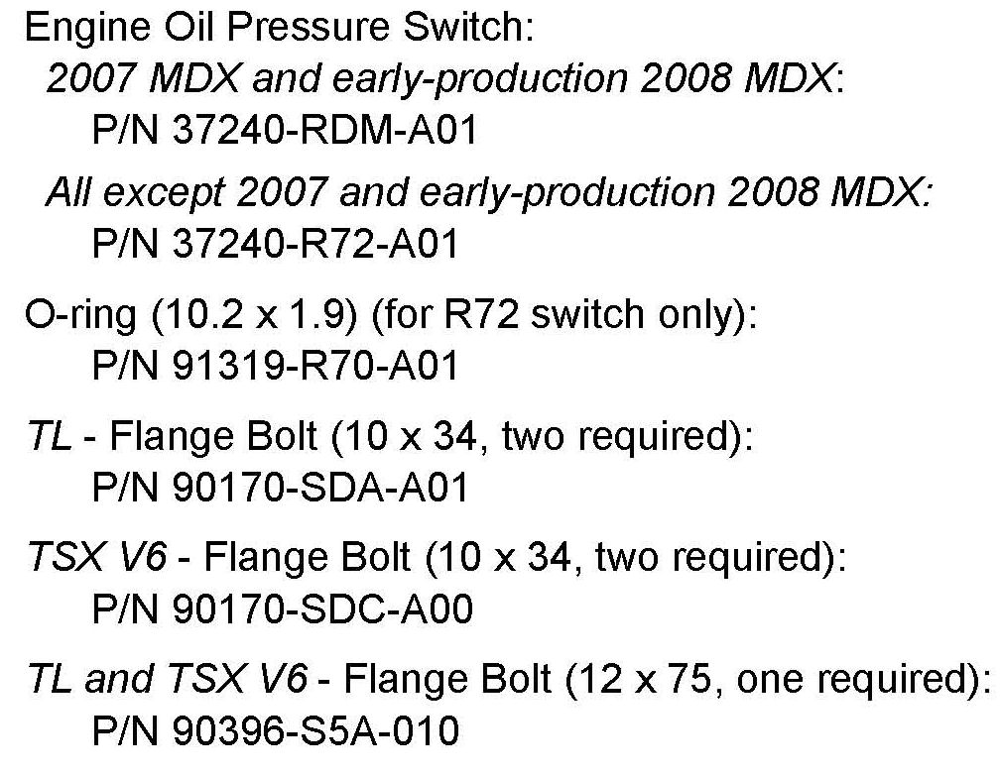
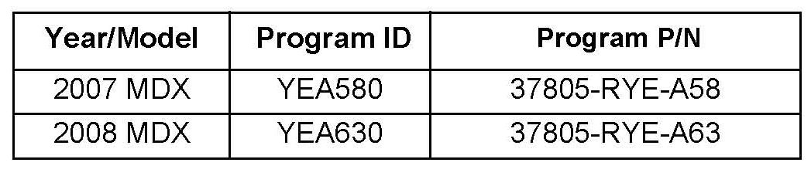
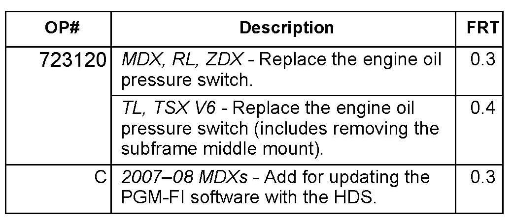
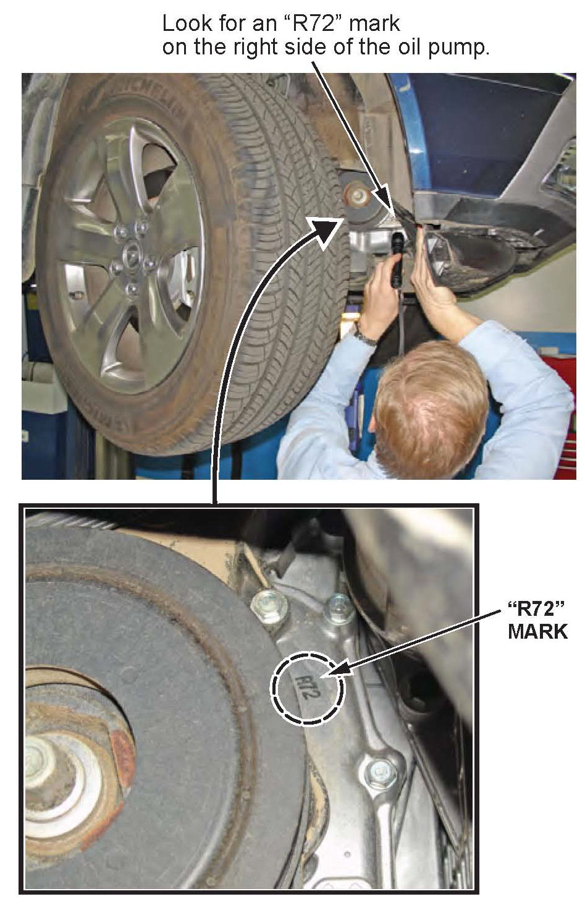
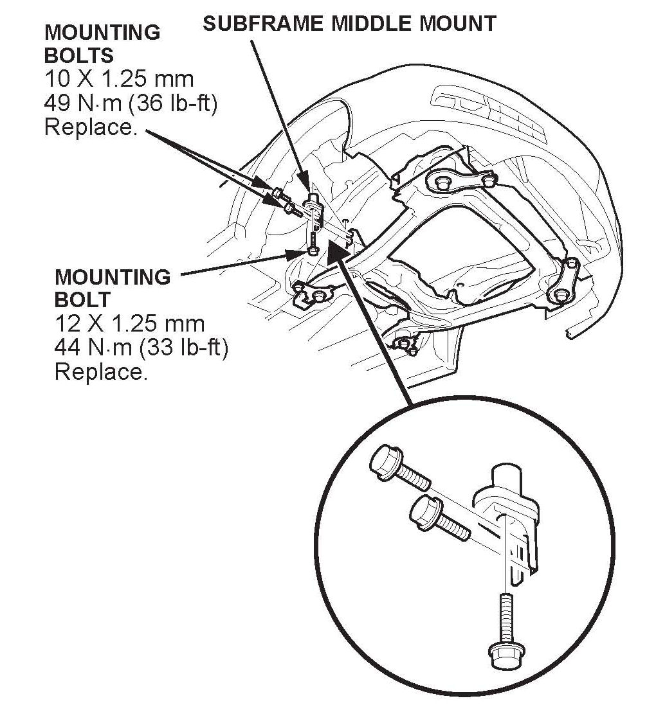
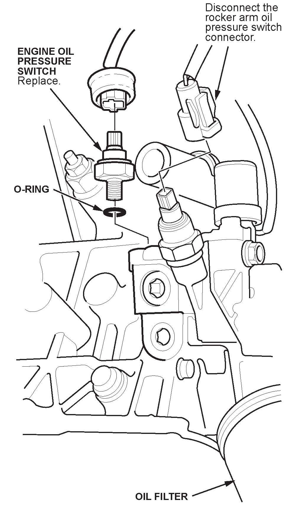
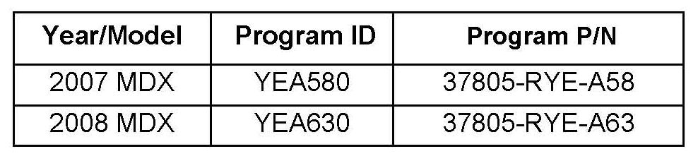

Engine Controls - False 'Check Engine Oil Level' Message
09-012June 7, 2011
Applies To:
2007-11 MDX - ALL
2009-10 RL-ALL
2009-11 TL-ALL
2010 TSX V6-ALL
2010-11 ZDX-ALL
MID or Navi Shows a Check Engine Oil Level Message, Low Oil Pressure
Indicator May Be On
(Supersedes 09-012, dated January 15, 2010; see REVISION SUMMARY)
REVISION SUMMARY
This service bulletin was revised extensively. American Honda recommends that you review all sections thoroughly.
SYMPTOM
With a normal engine oil level, a "check engine oil level" message appears on the MID or the navigation screen. The low oil pressure indicator on the instrument panel may also be on.
PROBABLE CAUSE
The engine oil pressure switch is faulty.
CORRECTIVE ACTION
Replace the engine oil pressure switch. For 2007 and early production 2008 MDXs, also check the PGM-FI software and, if necessary, update it with the HDS.
PARTS INFORMATION

NOTE:
On 2007 MDXs and early-production 2008 MDXs, the threads of the oil pressure switch are different than all the other models listed, including later MDXs. To make sure you install the correct switch, use the oil pump ID information in step 3 of the REPAIR PROCEDURE.
SOFTWARE INFORMATION
NOTE:
Only the 2007-08 MDXs may need a software update; see step 12.
HDS Software Version:
2.020.018 (December 2009) (green) or later.
Control Module (CM) Update:
Database Update 27-NOV-2009 or later.
NOTE:
To avoid an incorrect repair that would not be covered under warranty, use the software version listed above or a later version.

The updated PGM-FI software program IDs and P/Ns are shown below. If the HDS or MVCI is loaded with the latest software, and it displays No Update Needed during the update, the software for this service bulletin is already installed.
WARRANTY CLAIM INFORMATION

The normal warranty applies.
Failed Part: P/N 37240-RDM-A01
Defect Code: 03214
Symptom Code: 03205
Skill Level: Repair Technician
REPAIR PROCEDURE
1. Start the engine, turn the steering wheel fully to the right, then shut off the engine.
2. Raise the vehicle on a lift, and make sure it's securely supported.
3. 2007-08 MDX: Detach the front clip from the right front inner fender. Pull back the edge of the inner fender, and look for an R72" mark on the right side of the oil pump:
^ If the oil pump has the "R72" mark, use P/N 37240-R72-A01 for the new engine oil pressure switch.

^ If the oil pump does not have the "R72" mark, use P/N 37240-RDM-A01 for the new engine oil pressure switch.
4. 2007-08 MDX: Reattach the front clip to the right front inner fender.

5. TL and TSX V6: Remove the front subframe middle mount.

6. For easier removal of the engine oil pressure switch, disconnect the rocker arm oil pressure switch connector.
7. Disconnect the engine oil pressure switch connector, then remove the switch.
8. Remove any liquid gasket from in or around the switch hole.
9. Apply a very thin layer of liquid gasket to the threads of the new switch. R72 switch only: Install a new 0-ring. Install the switch, and torque it to 18 N.m (13 lb.ft).
10. Reconnect the engine oil pressure switch connector and the rocker arm oil pressure switch connector.
11. TL and TSX V6: Reinstall the front subframe middle mount with new bolts, and tighten them to the following specifications:
^ Tighten the two 10 x 1.25 mm (side bolts) to 49 N.m (36 lb.ft).
^ Tighten the 12 x 1.25 mm bolt (lower) to 44 N.m (33 lbf.ft).

12. 2007-08 MDX: Make sure the vehicle has the following software (or later) loaded. If it doesn't, update the PGM-FI software.

Disclaimer